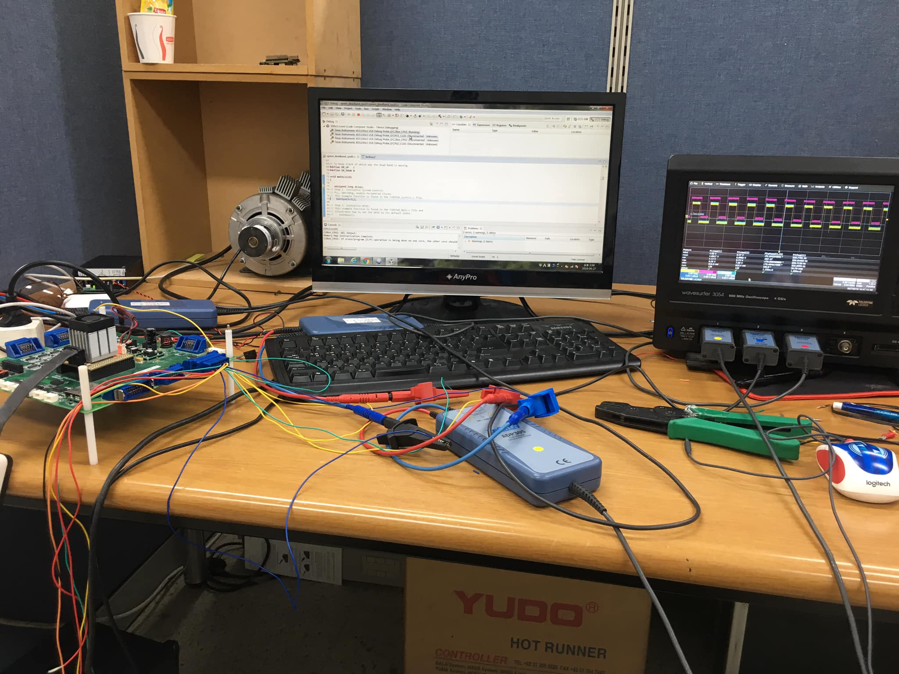

about me
Skills
Programming, Power Electronics and Social Skills- Proficient in Programming Languages C, C++, R, Python, Matlab.
- Effective in Simulation tools PSCAD, PSIM, PSPICE, SIMUINK.
- Tremendous communication, Leadership & Organizal Skills.
- Microsoft Office (Word, Excel, power point)
- Advanced in Adobe Photoshop & Illustrator.
Experiences
Lab Research assistant, Intern and IT technical expert.- Worked as a research assistant in the Yonse's smartgrid lab when undergraduate.
- Developed and Improved Electric vehicle prototype in SeoulTech as research assistant in the lab.
- Worked for a Money Remittance Company called GmoneyTrans as technical expert in the marketing team.
- Attended multiple Renewable Energy confereces held in Jeju Island.
- Interned in Yonsei Severance Hospital for 1 semester.
Activities
Startup, Volunteering and Extracarricular Activities/span>- Participated in startup contests in and out of Seoul.
- Volunteered for UNEP and UNICEF for 1 year in undergraduate.
- Won first prize in the Yonsei's drone programming and marathon contests.
- Participated in Daewoong Foundation's company experience programs.
- Represented Yonse's Int' Students for 3 consecutive semesters.
my education
2019 Sept~2022 June
Yonsei University
Master's Degree of Electrical and Electronics Engineering. Researching on Renewable energy Sources (REs), Electric Vehicles (EVs), Energy Storage Systems(ESS), Power Control and Transimission Systems
2019 March~2019 Aug
SeoulTech
After finishing my undergraduate program, I went to SeoulTech Digital Control Systems Lab as an intern, researching on power converters, power system control, camera and sensors optimization under professor Yong-il Lee to improve lab's electric car prototype.
2015 March~2019 Feb
Yonsei University
Bachelor Degree of Electrical and Electronics Engineering. Pursued my undergraduate program under full scholarship by the Korean Government (KGSP). Scholarship covered a plane ticket to Korea, health insuarance, monthly stipends and full tuition fees.
2014 March~2015 Feb
Sunmoon University
I spent 1 year to learn Korean as one of the requirements for the KGSP scholarship. In just 6 months, I happened to win the first prize in the Korean speach contest held in the language institution that year. Here I started to develop a hobby in programming.
my portfolio

contact me